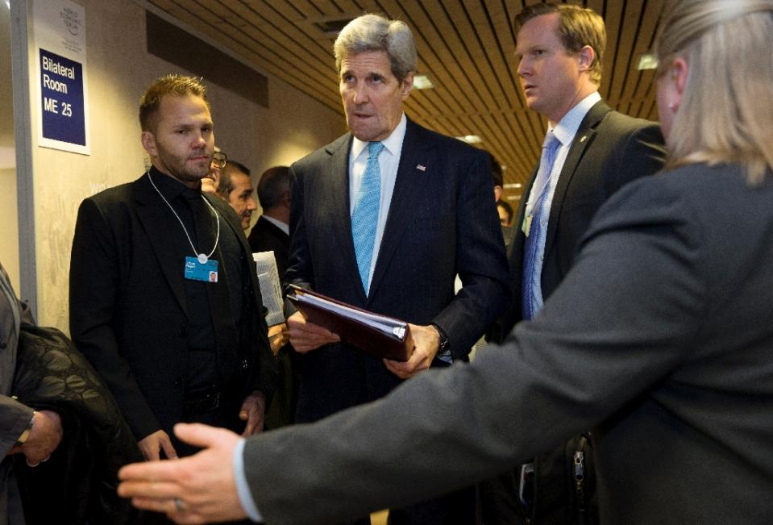

Kerry admits some of Iran funds could be sent to 'terrorist' groups
Davos (Switzerland) (AFP) - US Secretary of State John Kerry admitted Thursday that some of the funds Iran will recover as a result of sanctions relief could be directed to groups that Washington considers "terrorist" organizations.
His remarks at the World Economic Forum in Davos, Switzerland, come as the United States lifts a litany of sanctions levied on the Islamic Republic over its nuclear programme as part of a deal implemented this month following years of talks.
Kerry had earlier said the US stands by separate new ballistic missile-related sanctions on Tehran, a move Iran described as "bizarre".
When asked by US broadcaster CNBC, however, whether a portion of the funds unblocked by the lifting of the nuclear sanctions would be directed to organisations Washington labels as "terrorist", Kerry replied: "I think that some of it will end up in the hands of the IRGC or of other entities, some of which are labelled terrorists."
"I'm not going to sit here and tell you that every component of that can be prevented."
Iran's elite Islamic Revolutionary Guard Corps (IRGC) is not designated a foreign terrorist organisation by the US State Department, despite efforts by US lawmakers for it to do so. The US Treasury, however, has since 2007 considered the IRGC's Quds Force, which is responsible for external operations, a "terrorist" entity.
According to the Treasury, Iran will receive an estimated $55 billion as a result of the easing of restrictions on its economy thanks to the implementation of the nuclear deal.
"If we catch them (Iran) funding terrorism, they’re going to have a problem with the United States Congress and with other people, obviously," Kerry later told reporters.
"I'm just trying to be honest. I can’t tell people that no, some amount might not. But we don’t believe that that is what has made the difference in the activities of Iran in the region."
The US, meanwhile, unveiled new missile-linked sanctions against Iran on Sunday, almost immediately after the nuclear sanctions were scrapped.
"We stand by our sanctions," Kerry said earlier.
"We think they have been used judiciously and effectively and we are looking to move on now to put to test the willingness of Iran and other countries in the region to try to reduce tensions and move in a different direction."
Iranian Foreign Minister Mohammad Javad Zarif, who was also in Davos, criticised that US decision.
"I find it rather bizarre that the United States expresses concern over the Iranian missile programme, which is defensive and does not violate any current international regulation," Zarif said Wednesday.